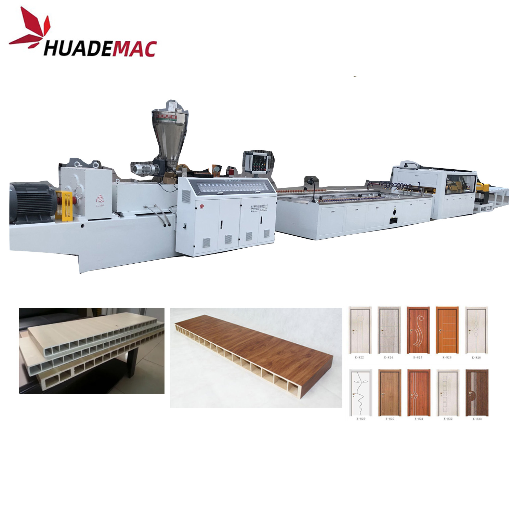
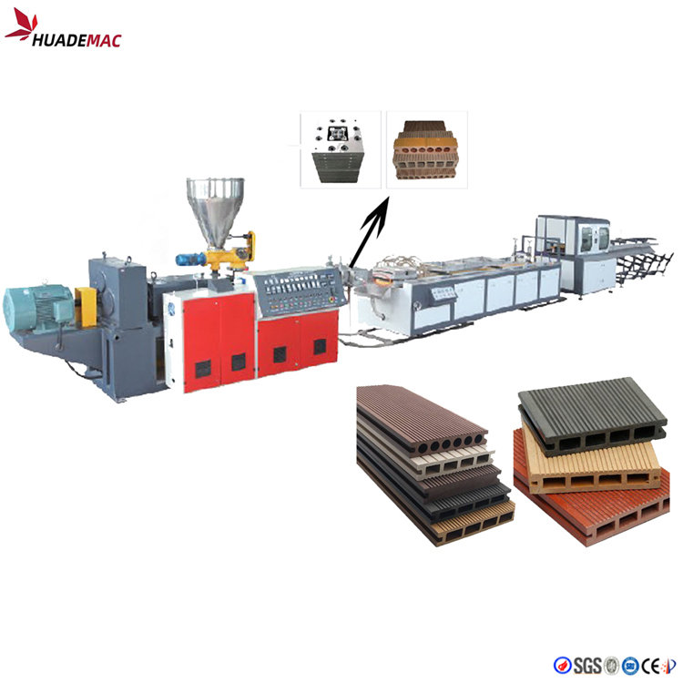

WPC Decking and Flooring Extrusion Line
Produce decking and flooring profiles from wood-plastic composites.
Inquire about this product Prepare a detailed project brief
Equipment overview
Wide Range of Applications
Wood plastic composites can successfully replace pure natural products thanks to their longer life and other beneficial properties. Such as decking and fencing elements, roofing ,trellises and door-frame profiles, picnic tables, benches .landscape timber, patios,gazebos and walkways, playground equipment.
Main Features Of Extrusion Line:
l Extruder adopts WPCd dedeciated screw, make sure best plastisizing effect, furhter make sure best final product shape
l Extruder speed and haul off speed controlled by ABB frequency inverter, saving power and easy adjusting speed
l Extruder temperature adopt PID control, temperature fluctuation self adjusting, it realise the high automatic level
l Equipped with infrared tracking device which can elimintate the problem of fluctuation of extrusion flow rate, further can make sure get best product
l Lower power consumption, it can save 25-30% electrical power consumption comparing with most same kind PVC ceiling extruder.
l Economical price, suitable for large scale investment.
Technical specifications
Reference configurations from the product catalogue. Confirm output, dimensions and equipment selection for your material and project.
| Product Width(mm) | 200 | 240 | 300 | 600 | 900 | 1200 |
|---|---|---|---|---|---|---|
| Extruder | SJZ55/110M | SJZ65/132M | SJZ80/156M | SJZ92/188M | ||
| Motor Power(kw) | 22 | 37 | 55 | 110 | ||
| Vacuum Pump(kw) | 4X1 | 5.5X1 | 5.5X1 | 5.5X2 | 5.5X1 7.5X1 | 5.5X1 7.5X1 |
| Water Pump (kw) | 2.2 | 2.2 | 4 | 5.5 | 7.5 | 7.5 |
| Capacity(kg/h) | 70 | 100 | 110 | 180 | 300 | 400 |
Detailed Images
Application
Equipment video
Ask about this machine
WPC Decking and Flooring Extrusion Line